UX 리서치 5년 · AI 플랫폼 PO 2.5년
일하는 장면에서 문제를 찾고,
제품으로 만들고,
AI로 일을 바꾸는 Product Owner
관찰하고, 작게 검증하고, 계속 고칩니다
UX 컨설턴트로 5년간 사용자를 관찰해 문제를 정의했고, AI 플랫폼 PO로 2.5년간 그 문제들을 제품 안에서 직접 풀고 개선해 왔습니다. AIMMO에서는 AI 학습 데이터 라벨링 플랫폼 STUDIO의 전략과 로드맵 수립부터 기획·개발·출시, 실제 사용 이후의 개선까지 제품의 전 주기를 주도했고, 최근에는 기업 AI 전환 제안과 기업 AI 교육에서 사람과 AI가 일을 나누는 방식을 직접 적용하고 있습니다.
AI 학습 데이터 플랫폼 STUDIO 총괄 · 8명+ TF 리딩 · 글로벌 고객사 수주 기여 · LG AI연구원 온프레미스 납품사례 →
장기 해외 체류
SK 그룹웨어 모바일 개편 기획, CJ ENM 히트맵 분석 단독 수행
여행 큐레이션 앱 기획·UI 설계
01
AIMMO
AI 학습 데이터 라벨링 플랫폼 STUDIO
자율주행·OCR 같은 AI 모델이 학습할 데이터를 사람이 만들고 검수하는 플랫폼입니다. 제품 전략과 로드맵부터 출시 이후 운영까지 맡았고, 기획·디자인·개발·QA 8명 이상의 TF를 이끌었습니다.
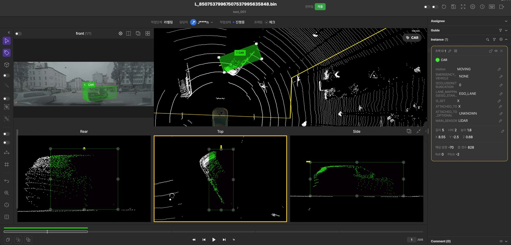
고객사BMW · Bosch · Continental · Magna · Arbe · 현대자동차 · 카카오모빌리티 · 스트라드비전 · LG AI연구원 · 네이버
AIMMO · 사례 01
6단계였던 검수 과정을
3단계로 줄여
검수 효율 대폭 개선
검수 1건당 최소 10초 이상 단축 → 작업 단가 낮춤
검수는 모든 라벨링 작업이 반드시 거치는 단계입니다. 작업 건당 단가를 낮추기 위해 검수 화면에서 바로 수정하는 기능을 MVP로 내놓았고, 검수자 전원이 쓰는 기능이 되어 모든 리소스 유형의 검수로 확장했습니다.
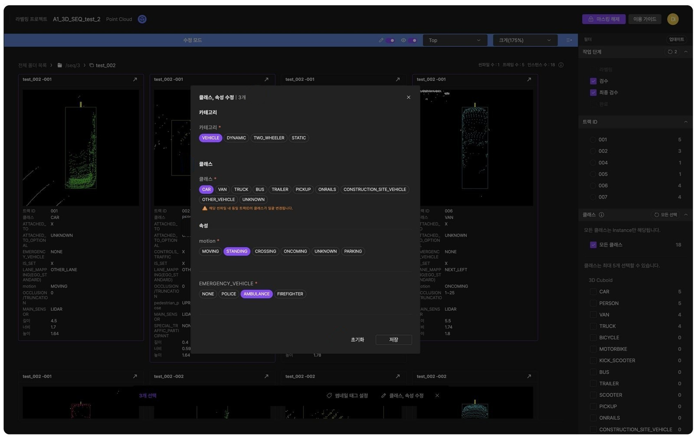
AIMMO · 사례 01 · 문제
간단한 수정에도 화면과 작업자가 두 번씩 바뀌어
작업 효율이 떨어졌습니다
기존 뷰어는 작업 결과물을 한 눈에 보는 단방향 도구였습니다. 검수 중 수정이 필요하면 뷰어를 벗어나 작업 화면으로 넘어가 담당자를 바꿔야 했고, 작업자가 수정한 뒤에는 검수자가 다시 검수 화면에서 확인해야 했습니다.
간단한 수정 예시이 객체는 '자동차'가 아니라 '트럭' 클래스로 고쳐야 함
AIMMO · 사례 01 · 해결 과정과 결과
검수자가 검수 화면에서 바로 고칠 수 있도록
- 발견 — 작업 단가 효율을 높이기 위해 라벨링부터 재검수까지 전체 흐름을 살펴보다가, 검수와 수정 사이의 반복 작업에서 비효율이 생기는 것을 발견했습니다.
- 판단 — 효과가 가장 클 것으로 본 방식을 MVP로 기획·개발해 실제 작업에 먼저 적용하고 테스트했습니다.
- 확장 — 테스트에서 확인한 효과를 근거로 유관 팀의 협업을 이끌어내, 전체 리소스 유형으로 확장했습니다.
- 건당 검수 시간 최소 10초 단축 (작업 단가 낮춤)
- 검수자 100% 사용 (효용성 검증)
- 효용을 검증해 전체 리소스 유형의 검수로 확장 (2024.09 싱글 이미지 → 2024.11 씬 파일 → 전체)
AIMMO · 사례 02
글로벌 선도 기업의
고도화 라벨링 요구를
새 작업 유형으로 만들어,
수주부터 실제 운영까지.
BMW 5개년 계약 · Bosch 수주 기여 · 정식 작업 유형 출시
Bosch와 BMW가 제시한 고도화 라벨링 요구를 분석해 폴리라인 포인트라는 새 작업 유형으로 해석했습니다. 데이터를 가장 정확하고 효율적으로 만드는 작업 방식을 최소 기능 데모로 먼저 제안하고, 정식 작업 유형으로 출시했습니다.
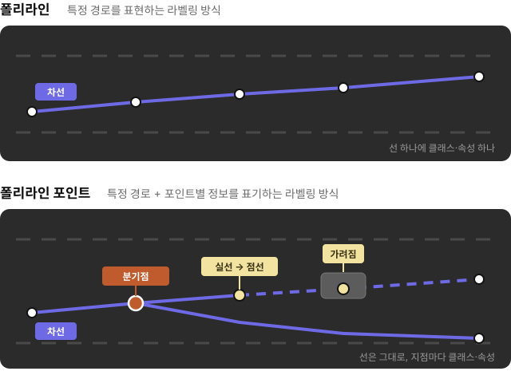
AIMMO · 사례 02 · 문제
요구는 새로운 라벨링 방식 하나였지만,
실제로는 작업 방식 전체를 새로 설계해야 했습니다
요구를 그대로 기능으로 옮기면, 작업자는 이어 붙인 이미지 한 장을 보고 분기와 가려짐을 추측해야 했습니다. 그래서 라벨링 기능만이 아니라 작업자가 판단하고 검수하는 과정, 그 뒤의 데이터 전처리와 산출물까지 전체 프로세스를 고려해 기능을 이어서 만들었습니다.
“경로에서 분기점과 상태가 달라지는 지점을
구분해서 라벨링할 수 있게 해 주세요”
- 선기존 폴리라인처럼 차선을 그린다
- 점의 의미선 위 포인트마다 클래스·속성을 붙인다
- 판단 근거각 포인트에서 그 지점을 찍은 원본 주행 이미지를 본다
판단이 어려운 예이 차선은 여기서 끊긴 걸까, 앞차에 가려진 걸까? 이어 붙인 BEV 한 장으로는 알 수 없음
BEV(Bird's Eye View) · 주행 사진들을 위에서 내려다본 시점으로 이어 붙인 한 장의 이미지
AIMMO · 사례 02 · 해결 과정과 결과
데모로 검증 후 출시, 지속적인 작업 효율 개선
- 데모 — 해석한 세 가지(선 · 포인트별 클래스·속성 · 원본 이미지 매핑)만 담은 최소 기능 데모를 짧은 기한 안에 만들어, 고객이 새 작업 방식을 화면으로 직접 확인하고 계약을 판단할 수 있게 했습니다.
- 검증 — 실제 작업자와 데모로 작업과 검수를 해 보니, 참조 이미지 없이는 판단이 어려운 부분이 있었습니다. 그래서 원본 이미지 매핑을 기본 작업 방식에 넣었습니다.
- 출시 — 검증한 방식 그대로 폴리라인 포인트를 정식 작업 유형으로 출시(2024.01)하고, BMW BEV 프로젝트에 적용(2024.03)했습니다.
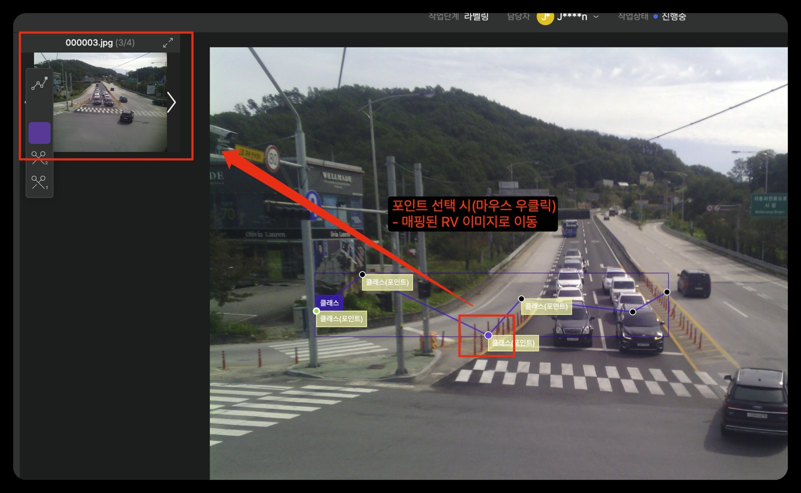
출시로 끝내지 않고 작업 현장의 요청을 매주 배포로 반영해, 같은 작업을 더 빠르고 정확하게 하도록 다듬었습니다.
BMW 5개년 계약 · Bosch 수주 기여
새 작업 유형 정식 출시 · 출시 후 4개월간 효율 기능 5개 추가 · 다른 고객사 프로젝트에서도 사용
AIMMO · 사례 03
사용자 조사 세션으로
지속적인 개선 시스템 만들기
현대자동차 프로젝트 개선 10건 모두 세션에서 · 요청부터 배포까지 평균 약 2주
프로젝트 PM과 실제 작업자를 매주 초대하는 사용자 조사 세션을 직접 설계해 약 1년간 운영했습니다. 세션에서 나온 불편을 다음 주 정기 배포로 이어, 작업 효율을 높이는 기능을 계속 내보냈습니다.
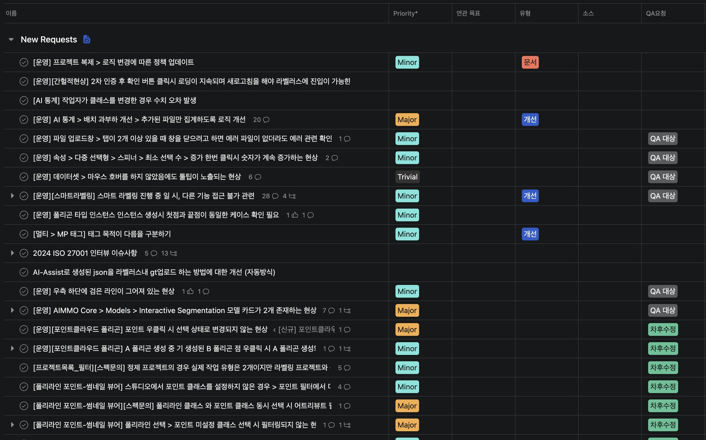
AIMMO · 사례 03 · 문제
작업자는 익숙한 방식 안에서
불편을 스스로 알아차리기 어려웠습니다
라벨링 작업 단가를 낮추는 것은 에이모의 미션 중 하나였고, 그러려면 기능을 계속 개선해야 했습니다. 하지만 현업 요청은 여러 경로로 흩어져 들어왔고, 작업자가 불편을 꺼내 놓을 자리도 마땅치 않았습니다.
라벨링 작업 단가를 낮추기 위해 작업 효율을 계속 높이는 것
작업자는 익숙해진 방식의 비효율을 알아차리기 어렵고, 요청은 흩어져 우선순위가 서지 않음
실제 작업자의 불편을 정해진 주기로 듣고, 바로 배포로 잇는 고정된 자리
세션 전 작업 예라벨링이 빠진 포인트를 화면에서 하나씩 눈으로 찾아야 했음
AIMMO · 사례 03 · 해결 과정과 결과
듣고, 만들고, 다음 주에 확인하는 1주 단위 개선 루프
- 프로젝트 PM과 실제 작업자를 매주 초대해, 작업의 니즈와 불편을 듣고 해당 기능을 함께 써 보며 개선 방향을 모았습니다.
- 모은 내용은 PD와 바로 기능으로 설계해 다음 정기 배포에 넣고, 다음 세션에서 효과를 확인해 다시 고쳤습니다.
효과가 확인된 기능은 고도화하거나 다른 프로젝트로 확장
누락 포인트 시인성 개선, 인스턴스 숨김·z값 필터·올가미 선택으로 작업 범위를 빠르게 지정
검수 전에 픽셀 누락 자동 검출, 최대 확대 단축키·엣지 표시로 객체 핏 확인
플랫큐보이드 확장면 시작점 조정, 폴리라인 첫 번째 선 표시
인스턴스 크기(넓이·너비·높이)를 뷰어에서 바로 확인
AIMMO · 온프레미스 납품
SaaS 고객의 패키지 구매를
기존 툴 최소 수정으로 납품해 유지보수 계약까지
LG AI연구원 · 2025.03 LG 내 서비스 오픈 · 1년 유지보수 계약
에이모 데이터 프로젝트에서 STUDIO를 써 본 LG AI연구원이 툴 자체를 자체 환경에 들이기로 했습니다. LG의 요건을 그대로 구현하면 기존 툴 구조와 부딪혔습니다.
기능 목록보다 LG의 업무 프로세스를 먼저 파악하고, 그 프로세스를 기존 툴의 최소 수정으로 담는 쪽으로 패키징 범위를 정했습니다.
전담 PO로 PD·FE·QA·BD 6명과 프로젝트 보드를 운영하고, 기능·단축키·산출물 정의서를 썼습니다. 분자식 텍스트 추론 기능을 새로 만들고, 외부 API 비용을 누가 낼지 정책으로 정했습니다.
AIMMO · 제품 결정 기록
기능을 더하기 전에 먼저 정한 것들
| 시기 | 결정 | 근거 | 결과 |
|---|---|---|---|
| 2024.01 ~ 2024.02 | 유효성 검사를 프로젝트별 설정에서 프로젝트 자체 API 방식으로 구조 변경 | 프로젝트가 다양해지며 프로젝트마다 개별 설정하는 방식으로는 확장이 어려움 | 현대자동차 무효 픽셀 검출, BMW 겹침·빈 픽셀 검출 등 고객사별 규칙 확장 |
| 2024.06 ~ | 포인트클라우드는 신규 기능보다 구조 개선을 먼저 로드맵에 올림 | 프레임 수가 늘면 툴이 느려지거나 멈추고(최대 300프레임), 썸네일 뷰어 확장도 성능에 막힘 | 인프라·백엔드·프론트 구조 개선을 선행하는 로드맵으로 정리 |
| 2023.11 ~ 2025.03 | 이미지 ↔ 참조 뷰(RV) 연동을 단계적으로 출시 | 작업·참조 리소스가 싱글·시퀀스로 나뉘어 조합이 네 가지 | 싱글-싱글 1차 배포 후 조합별로 나눠 2025.03.31 정기 배포, 고객 일정에 맞춰 시점 조정 |
| 2025.01 ~ 2025.03 | 클래스·속성 모달은 바로 바꾸지 않고, 기존안과 개선안을 전환해 쓰게 배포 | 작업자와 검수자가 같은 모달에서 서로 다른 이유로 불편을 겪음 | 2025.03.17 배포, 실사용 의견으로 대체 여부를 정하기로 함 |
02
AI 전환
사람과 AI가 일을 나누는 방식을 현장에서
기업의 AI 전환 제안에서는 현업 담당자의 판단 로직을 꺼내는 인터뷰·관찰을 중심에 뒀고, 기업 AI 교육에서는 실무자가 Claude Code로 직접 일하도록 과정을 설계하고 가르치고 있습니다.
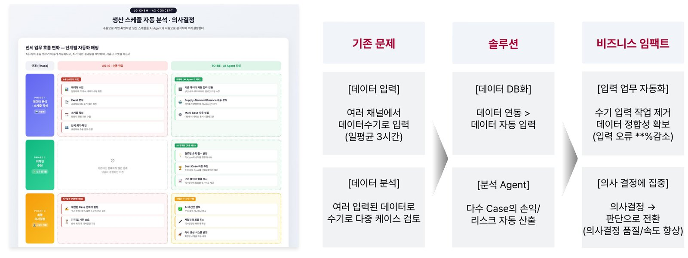
AI 전환 · 사례 01 · Team J-Curve
AI 에이전트를 만들기 전에,
담당자의 판단 로직부터
꺼내는 제안
LG화학 SCM AI 에이전트 · 제안서 44p 중 본문 약 20p 작성 · 최종 발표 · 미수주
고객은 이미 목표(적시 생산 에이전트)와 데이터(엑셀 기반)를 갖고 있었습니다. 부족한 건 SCM 담당자와 고참의 머릿속에 있는 판단 로직이라고 보고, 현업 인터뷰·관찰 단계를 제안의 중심에 두었습니다.
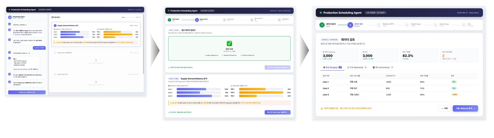
미수주 사유 · J-Curve 측 전체 AX 프로젝트 수행 여력, LG화학 측 예산 규모 미확정
AI 전환 · 사례 02 · Team J-Curve
UX 리서치 방법을
기업 AI 전환 과정으로 옮긴
4단계 프레임워크
LG화학 SCM AI 에이전트 제안서 본문(10 ~ 29p)에 전체 적용
AX 프로젝트에서 시간이 가장 많이 드는 곳은 현업 담당자의 암묵지와 업무 맥락을 꺼내는 일이라고 보고, UX 리서치의 발견·정의 단계를 프레임워크 중심에 두었습니다. 내부 리뷰에서 AI 활용이 부족하다는 의견을 받아, 단계마다 AI의 역할(보조·위임·자율)을 붙였습니다.
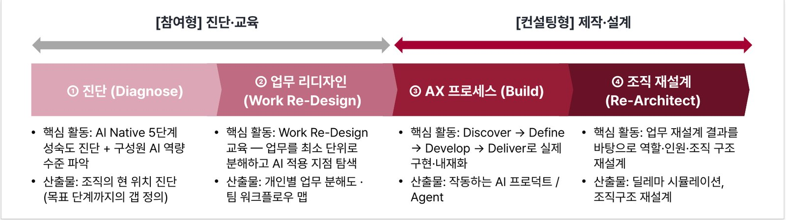
AI 전환 · 사례 03 · 기업 AI 교육 · 2026.05 ~ 현재
현업 실무자가 AI로 직접 일하도록,
Claude Code 과정을 설계하고 가르칩니다
- 공기업 실무자 1:1 과정 (2026.07 ~ 진행 중, 8주차) — 한국농어촌공사 전기직 실무자 대상. Claude Code 리터러시부터 설계·발주 검토 자동화, 설계 내역서 단가 최신화까지 실제 업무로 실습
- HRD 강사 원데이 클래스 (2026.09) — Claude Code 기초·실습, 교육 현장에서 바로 쓸 도구 직접 만들기
LG 18회 · SK이노베이션 11회 · 하나금융그룹·하나캐피탈 4회 · LX MDI·D&O CM 2회
- SK이노베이션 AI Agent 팀장 과정 (2026.08 ~ 2026.09) — 사내 AI 툴 리터러시, 업무 재설계, AI 에이전트 제작
- LG 임원 AI for Company · AI for Leaders (2026.05 ~ 2026.09) — AI 기초, Claude Code 실습, 바이브 코딩
- LG MBA 신사업 AI 해커톤 (3일) — Claude Code와 Higgsfield를 연동해 참여팀 발표 영상 제작 지원
03
UX 컨설팅
리서치로 찾은 문제가 실제 서비스에 반영되기까지
비디오 에스노그래피·UT·FGI·서베이·히트맵으로 사용자 문제를 정의하고, 설계로 옮기고, 제안한 기능이 실제 서비스에 반영되는 것까지 확인했습니다. IXI에서는 컨설팅·구축 프로젝트 PM 4건, PL 2건을 맡았습니다.
UX 컨설팅 · 사례 01 · IXI
헬멧 카메라로 실제 주행을 따라가
찾은 문제를 앱 기능으로 반영
제안 기능 실제 앱 반영 · HCI 2020 Case Study 발표
공유 킥보드 씽씽의 세 과제(첫 이용 전환, Geo-Fence 이탈, 재이용 요소)에 맞춰 리서치 세 가지를 설계했습니다. 사용자가 Geo-Fence 경계를 알아차리지 못한다는 가설은 실제 주행을 따라가는 비디오 에스노그래피로 검증해, 운영비를 줄이는 기능 제안으로 이었습니다.
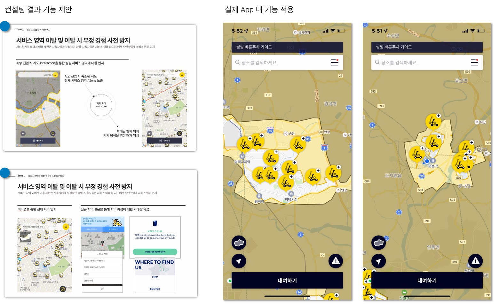
UX 컨설팅 · 사례 01 · 리서치 설계와 결과
문제 3가지에 맞춰 리서치 3가지를 설계하고,
운영비가 걸린 문제는 실제 주행으로 검증
- 가입한 사람에 비해 첫 이용으로 이어지는 비율이 낮음
- Geo-Fence 밖으로 나가 운영비가 늘어남
- 경쟁이 심해지는데 다시 쓰게 만드는 요소가 없음
- 온라인 서베이 — 5회 이상 이용자 150명, 70문항
- 심층 인터뷰 — 아주 자주 타는 사용자 7명
- 비디오 에스노그래피 — 가볍게·자주 타는 사용자 7명, 헬멧 GoPro 촬영과 회고 인터뷰, 행동 가설을 먼저 세우고 과제 3개(총 1.8km)를 파일럿 후 진행
“사용자는 Geo-Fence 경계와
제한 사항을 알아차리지 못한다”
- 기능 제안운영비를 줄이는 방향의 기능으로 연결
- 서비스 반영제안한 기능이 실제 앱에 적용
- 발표HCI 2020 학술대회 Case Study
UX 컨설팅 · 사례 02 · IXI
주문 화면에서 멈추는 장면을 보고,
할인·증정 조건을 화면에 꺼냈습니다
Amway · UT 인사이트를 UI 요구사항으로 · 실제 서비스 반영
암웨이 사업자(ABO)를 대상으로 UT를 설계하고 진행했습니다. 정기 주문(SOP) 중 할인·증정 조건을 이해하지 못하고 멈추는 장면을 확인해, 차수별 할인 정보, 증정품 상세, 주기·시작월 정보 버튼을 UI 요구사항으로 바꿨고 실제 서비스에 반영됐습니다.
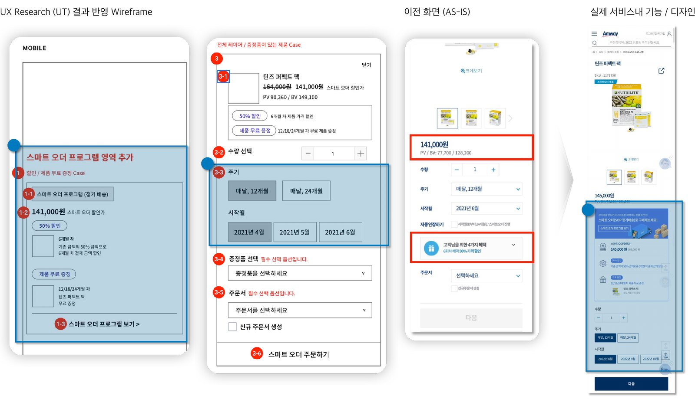
UX 컨설팅 · 사례 03 · 이모션글로벌
제형부터 확인하려는 행동을 보고,
첫 상품 이미지 규칙을 바꿨습니다
정관장몰 · 서베이 200명 · UT 10명 · 히트맵 분석 → 실제 서비스 반영
건강기능식품 몰로 넓혀 가던 정관장몰의 개선을 위해 서베이, UT, 히트맵·퍼널 분석을 설계하고 진행했습니다. 사용자가 상품 이미지로 제형을 바로 알고 싶어 한다는 행동을 보고 첫 번째 상품 이미지는 제형이 드러나게 했고, 건강기능식품이 낯선 사용자를 위해 증상·성분 정보를 쉽게 풀었습니다.
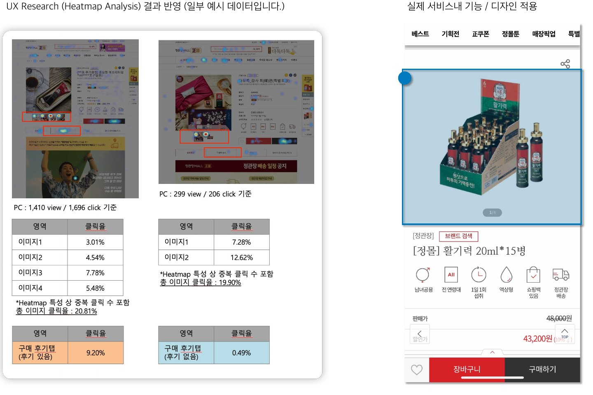
UX 컨설팅 · 그 밖의 프로젝트 · 2017 ~ 2022
그 밖의 UX 컨설팅 · 서비스 기획 프로젝트
맥락 조사·고객 여정 지도·서베이 255명으로 기능 개선안 도출, 신규 기능 UI·프로토타입 설계
H&A·IT·HE 부서별 UI 흐름과 정보 구조 설계
앱 서비스 기획, 초기 요건 협의
글로벌 경쟁사 분석, 리모컨 기반 인터랙션 제안
모바일 그룹웨어 개편 서비스 기획
히트맵 분석을 세팅부터 보고서까지 단독 수행
챌린지 파트 구축 기획, 2019.03 출시
FGI로 부서별 요구사항 정리, 제품 카테고리 IA 설계, ICT GUI 가이드라인 제작
사이드 프로젝트
일하다 생긴 작은 불편은,
직접 만들어 풀어 봅니다
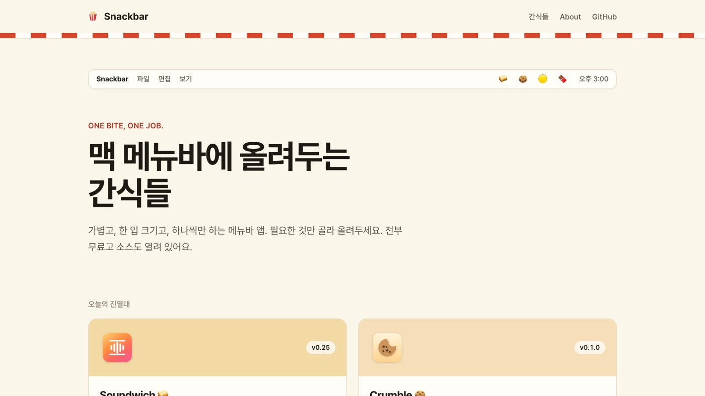
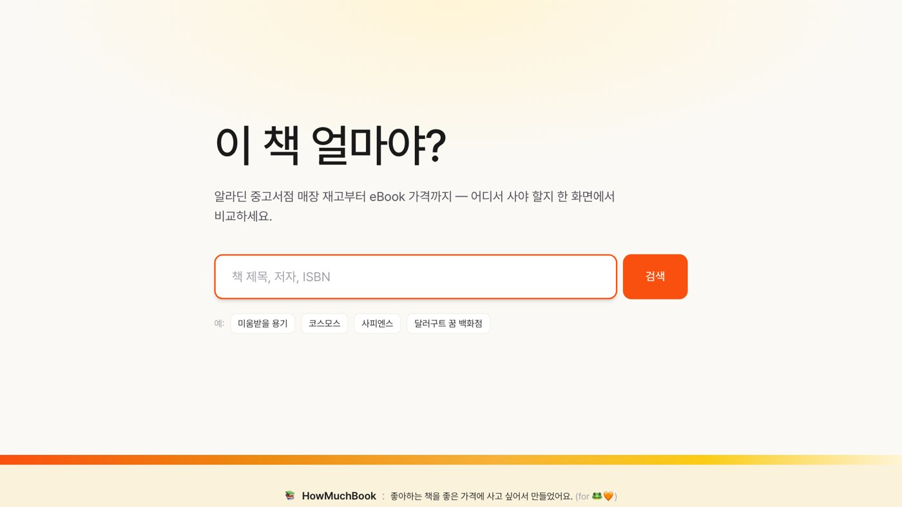
웹 초안 (나머지 사례 링크는 아직 연결 전)